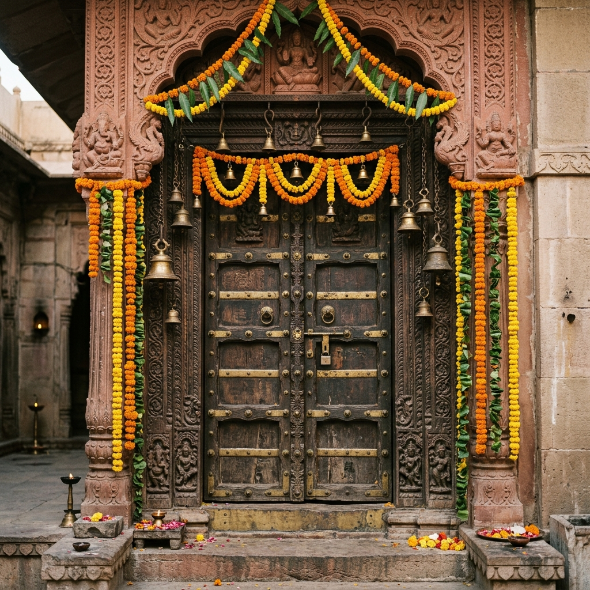

Gomateshwara Statue
Shravanabelagola, Karnataka
The Sacred Legacy

The Gomateshwara statue at Shravanabelagola is one of the world's most extraordinary monolithic sculptures a 57-foot figure of Lord Bahubali carved from a single granite rock in 981 CE. This magnificent creation of Chamundaraya, a minister of the Ganga dynasty, stands naked on a hilltop in total serenity, with creepers winding around his legs and anthills at his feet symbols of his decades-long meditation that was so absolute he remained completely unmoved as nature reclaimed him.
Lord Bahubali, son of the first Jain Tirthankara Rishabhanatha, is revered as the first human being to achieve liberation in this cosmic epoch. After defeating his brother Bharata in a series of contests for dominion over the kingdom, he renounced everything at the moment of victory surrendering his crown, his wealth, and his very clothes and stood in motionless meditation for a year until he achieved omniscience and liberation. He is the ultimate symbol of ego-death and renunciation.
Sculptural Mastery
Carved from a single block of granite on Vindhyagiri Hill, the statue is the world's largest free-standing monolithic sculpture. The proportions, the serene facial expression, and the extraordinary detail of the creepers and wildlife carved around the figure represent the pinnacle of 10th-century Indian stone-carving artistry. The entire hill was smoothed and shaped over years by hundreds of craftsmen.
Mahamastakabhisheka
Every 12 years, the extraordinary Mahamastakabhisheka (Grand Head Anointing) ceremony takes place when the 57-foot statue is anointed with 1,008 kalashas of sacred substances: milk, curd, ghee, sugarcane juice, turmeric, gold coins, flowers, and precious gems. This once-in-12-year ceremony draws over 4 million pilgrims from around the world and involves elaborate scaffolding erected around the entire statue.
Jain Philosophy
Shravanabelagola is the most important pilgrimage site in Digambara Jainism. The statue embodies the Jain ideal of complete renunciation (aparigraha) Bahubali owns nothing, wears nothing, needs nothing. His liberation was achieved through absolute non-attachment. The surrounding Jain temples, inscriptions dating to the 6th century CE, and the pilgrimage infrastructure make this one of Karnataka's most historically rich sacred sites.
The Sacred Climb
The 614 steps carved into Vindhyagiri Hill must be climbed barefoot a practice that connects the pilgrim to the earth and physically enacts the humility before the divine. The panoramic view from the summit of the surrounding plains, other sacred hills, and the vast Karnataka landscape makes the effort extraordinarily rewarding. The small Jain temples carved into the hillside along the climb add continuous spiritual atmosphere throughout the ascent.
He who renounces when he has everything is the truly rich man. He who remains still while the world storms around him has achieved the supreme victory. Bahubali shows us the path. Jain Acharya's Teaching
How to Reach
Bangalore Airport 0 km
Mysore Airport 0 km
Hassan Station 0 km
Channarayapatna 0 km
From Bangalore (0 km), Mysore (0 km)
KSRTC buses from Hassan
October to March
Mahamastakabhisheka once in 12 years